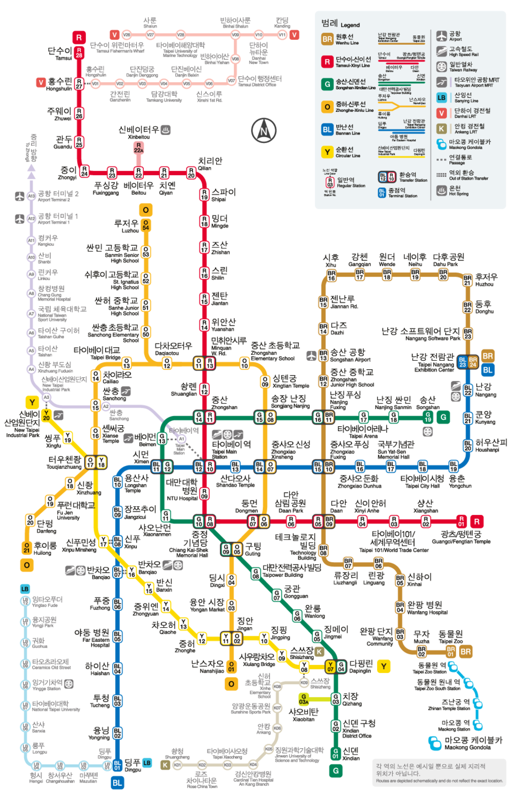

은찬 & 은채와 함께하는
대만 가족 여행 대시보드
2026.11.21(토) ~ 11.24(화) · 7세 기차 매니아 은찬이와 15개월(2025.08.27생) 걸음마 토들러 은채의 안전하고 편안한 타이베이 힐링 여행!
은찬이의 대만 탐험 카드뉴스 & 퀴즈 모험
대만 역사, 딤섬 먹는 법, 지하철 규칙, 판다와 101빌딩 댐퍼베이비, 그리고 생생 중국어 음성 회화까지 재미있게 미리 배워보세요!
✈️ 왕복 비행기 상세 일정표 (진에어 JIN AIR)
출국(LJ0171) & 귀국(LJ0172) 확정 스케줄 및 위탁수하물·유아 동반 탑승 정보
📅 일자별 여행 스케쥴 타임라인
실시간 수정 지원항공 일정 및 15개월 토들러 케어 타임라인을 한눈에 확인하고 직접 수정·추가할 수 있습니다. (브라우저 자동 저장)
🚇 MRT 노선도 & 일자별 이용 동선
지도 위 배지는 "N일차-몇 번째 방문"을 의미합니다. 배지 색상 = 방문 일자, 지도가 복잡하면 하단 순서 목록을 함께 참고하세요.

- 타오위안공항 (A12/A13) — 공항철도 탑승
- 타이베이역 (A1) — 하차 · 호텔 체크인
- 베이먼 (G13) — 철도부원구 박물관
- 쏸롄 (Shuanglian) — 닝샤 야시장
- 동물원 (BR01) — 타이베이 동물원 · 마오콩 곤돌라 탑승
- 젠난루 (BR15) — 미라마 백화점 · 대관람차
- 타이베이역 (A1) — TRA 이란선 환승 탑승 (→ 루이팡 → 핑시선 환승 → 스펀, 지도 밖)
- 중샤오신성 (BL14/O07) — 화산 1914 창의문화원구
- 타이베이101/세계무역센터 (R02) — 101 타워 야경
- 타이베이역 (A1) — 공항철도(급행) 탑승
- 타오위안공항 (A12/A13) — 도착 · 출국 수속
※ MRT 노선도는 사용자가 업로드한 노선 안내도 기준이며, 각 역의 실제 위치는 지도와 정확히 비례하지 않을 수 있습니다.
👶 15개월 은채 맞춤 토들러 케어 가이드
2025.08.27생 ➔ 11월 여행 시점 딱 15개월(걸음마 시작 토들러)로 업그레이드된 식사·이동·오감 포인트!
식사 (완료기 이유식 & 유아식)
현지 식당 메뉴 쉐어 가능액상 분유나 시판 파우치에만 의존하지 않고, 대만 식당에서 부드러운 메뉴를 온 가족이 함께 먹을 수 있습니다.
- 딤섬집: 새우 계란볶음밥(간 약하게), 샤오롱바오 속살
- 키키 레스토랑: 부드러운 계란 연두부 튀김(속살 최고)
- 길거리/디저트: 찐빵(바오즈) 빵, 고구마볼(띠과치우), 바나나
이동 & 걸음마 프리존
1일 1회 낮잠 맞춤 동선유모차에 누워만 있지 않고 아장아장 걷고 싶어 하는 시기! 안전한 평지 잔디밭과 실내 광장을 동선에 배치했습니다.
- 화산 1914 잔디밭: 차 없는 넓은 잔디광장 (비눗방울 놀이)
- 철도박물관 & 백화점: 쾌적한 실내 평지 산책 & 옥상정원
- 낮잠 패턴: 점심 후 1~2시간 ➔ 케이블카/유모차 이동 중 꿀잠
오감 반응 & 남매 시너지
은찬(7세) & 은채(15개월) 케미동물과 불빛, 소리에 적극 반응하는 시기라 7세 은찬이와 함께 보고 즐기는 맛이 배가됩니다.
- 동물원 판다 & 셔틀열차: 은채는 "어!" 손가락 반응, 은찬이는 기차 열광
- 스펀 기찻길 천등: 떠오르는 대형 풍등 불빛에 남매 동시 환호
- 야시장 게임 & 간식: 은찬이 핀볼/풍선 ➔ 은채는 고구마볼 간식
✅ 여행 준비 상황 & 짐 싸기 체크리스트
체크하면 브라우저에 자동 저장됩니다. 실시간 준비 진행률을 확인하세요!
🗣️ 식당 & 유아 동반 필수 중국어 소통 카드
카드를 클릭하면 한자가 복사되며, 식당 직원에게 화면을 보여주시면 즉시 통합니다!